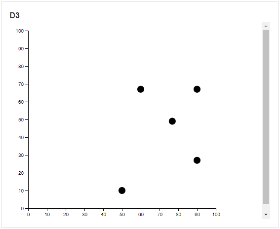

D3 Visualization
D3 Visualization is a library for producing dynamic, interactive data visualizations in web browsers. The D3 Block allows you to integrate these dynamic visualizations onto a page of your app using certain script files.

D3 Visualization Properties
Behavior
Script
Upload the HTML script file that will be rendered in the D3 control, which is used to create data visualization which will allow you to display data from a Data Source. The data on the graphs will update in real-time. For more information on how to create D3 scripts, visit this website.
The official D3 website explains how to script these visualizations and transformations. They also have a list of examples and code samples that can be used to create visualizations in different formats, such as sunbursts or graphs. Version 6.1.1 of the D3 library is supported.
The template is the base of the script that is used to create the visualizations. Any sample code taken from examples on D3 can be copied into a script template.
The Script property is required for the D3 Visualization Block.
Note
To upload a script, it first needs to be uploaded using the App Files Manager. See the Manage App Files article for more details.
Script template:
<div id="myCanvas"></div>
<script src="../../content/scripts/d3.js"></script>
<script>
/////////////Add d3 script here to transform #myCanvas/////////////
///////////////////////////////////////////////////////////////////
function onDataLoaded(data){
//Apply data to d3 svg canvas
}
function onDataChanged(data, changes){
//Respond to live updates on the dataset by updating d3 svg canvas
}
</script>
The onDataLoaded(data) function is where you would write code to respond to the data that is being sent into the script or D3 control. For example, when the data gets loaded, you would want to display the points.
The onDataChanged(data, changes) function is where you would write code to respond to any changes made to the data so the visualization will adapt in real-time and show live data.
Below is an example of a working script that shows data along an X-axis and Y-axis.
Data Source
Common Properties
Data from this Data Source will be displayed using the script attached.
Properties that are common to most Blocks include: filter, sort, show # of results, and skip # of results;
See the Common Properties article for more details on common Data Source properties.
The Data Source property is required for the D3 Visualization Block.
Last modified: January 18, 2026